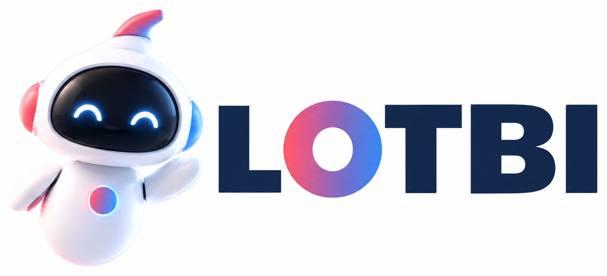

LOTBI



LOTBI는 실수할 수 있습니다. 중요한 정보와 예약·구매 내용은 최종 확인해 주세요.
이미지는 JPEG·PNG, 파일은 PDF·DOCX·TXT·CSV·JSON을 지원하며 메시지당 최대 3개까지 첨부할 수 있습니다.
메시지를 입력하면 LOTBI와 대화를 시작합니다. 로그인 연결이 필요하면 안전한 Account handoff로 이동합니다.
LOTBI 응답을 기다리는 중입니다. LOTBI 로그인이 필요합니다. LOTBI 대화를 완료하지 못했습니다.